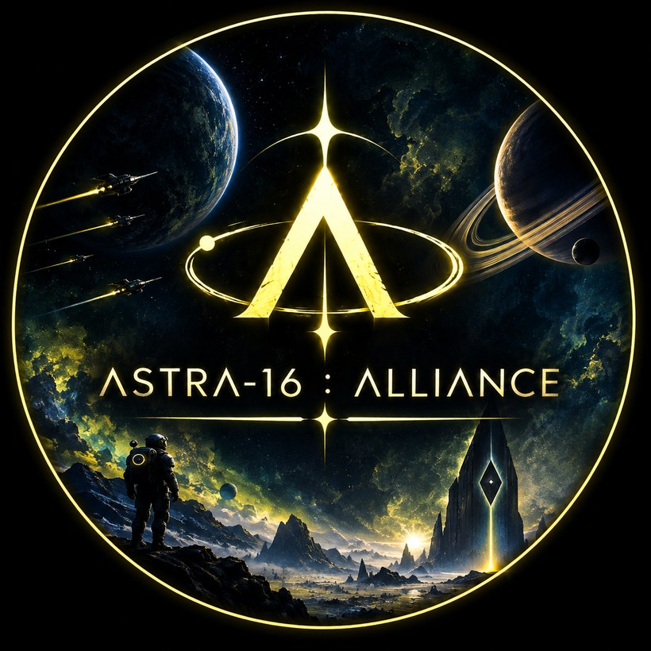
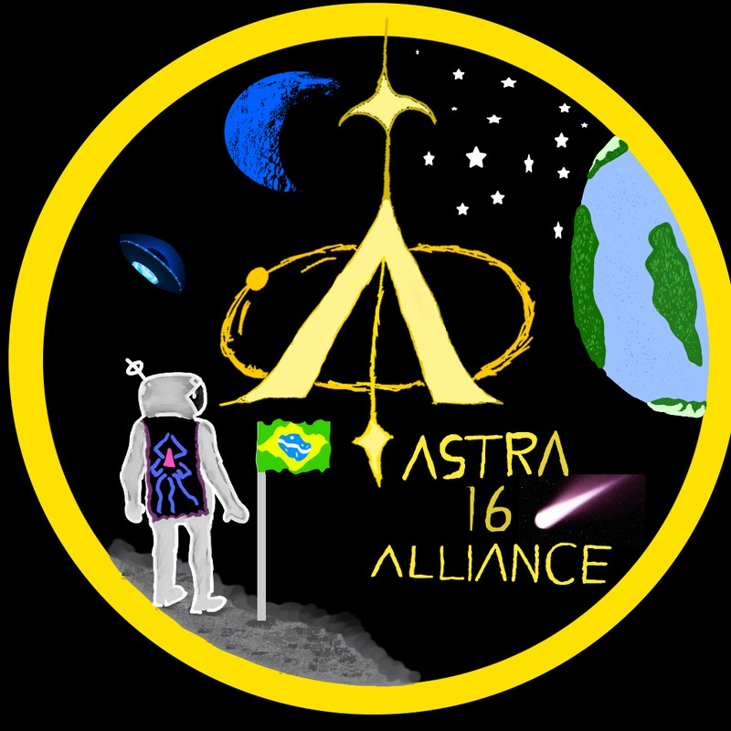

Não importa de onde você veio, nem qual caminho escolheu até aqui. Exploradores, comerciantes, guerreiros, construtores — todos têm espaço entre as estrelas.
Em algum ponto entre as estrelas, onde a luz de mundos distantes se perde no vazio, nasceu a ΛSTRA-16 : ALLIΛNCE.
Não somos apenas um clã. Somos uma aliança de viajantes, unidos por uma mesma vontade: olhar para o infinito e decidir que ele não será apenas observado — será explorado.
A galáxia é imensa. Milhares de sistemas aguardam além das rotas conhecidas. Mundos esquecidos, civilizações perdidas, ruínas de eras antigas e horizontes que nenhum viajante ainda alcançou.
E é nesse infinito que encontramos nosso propósito.
Não importa de onde você veio.
Não importa qual seja sua nave.
Não importa qual caminho você escolheu até aqui.
Na ΛSTRA-16, não rejeitamos ninguém.
Aqui, cada viajante possui seu próprio caminho, mas nenhum precisa percorrê-lo sozinho. Exploradores, comerciantes, guerreiros, construtores, pesquisadores ou simplesmente aqueles que desejam encontrar um lugar entre as estrelas — todos têm um espaço entre nós.
Erga os olhos para o céu. Aquela estrela distante pode ser o começo de uma nova história.
A ΛSTRA-16 está apenas começando. E se você decidiu atravessar o vazio conosco... seja bem-vindo à ALLIΛNCE.
Além da última rota catalogada, onde nenhum farol de nenhuma federação chega, existe um ponto que os mapas se recusam a desenhar. Os poucos que passaram por lá voltaram mudados — quando voltaram. Alguns falam de vozes entre estrelas mortas. Outros, de um silêncio grande demais para ser natural.
Diz a lenda que a ΛSTRA-16 nasceu ali — não da glória, mas da traição de um viajante que trocou as coordenadas de um refúgio aliado por uma promessa vazia. Do que restou — cinzas, desconfiança e dezesseis nomes que se recusaram a se separar — nasceu um pacto novo. Não de vingança, mas de resistência.
Porque toda revolução começa com alguém que se recusa a desistir. E toda escuridão, por mais funda que seja, ainda pode encontrar sua solução — se houver viajantes dispostos a atravessá-la juntos.
Continua… — esta é só a primeira página da crônica. Novos capítulos (e novas reviravoltas) vêm por aí.
No Man's Sky permite que viajantes formem alianças oficiais dentro do próprio jogo, participando de até três coletivos ao mesmo tempo. Veja o que isso significa para quem entra na ΛSTRA-16:
Entramos oficialmente como aliança usando o sistema em jogo, com bandeira e identidade próprias reconhecidas por outros viajantes.
Coordenamos bases, portais de teletransporte e rotas de exploração, para que ninguém precise redescobrir o que outro já mapeou.
Do recurso raro emprestado ao resgate no meio de um combate: a regra é simples, quem está na aliança não anda sozinho pelo vazio.
Todo mundo que atravessa o portal carrega o mesmo título de base: viajante. A patente é o que evolui com o tempo, a participação e a confiança conquistada dentro da aliança.
Toda essa hierarquia é uma patente dentro do título de viajante — ninguém deixa de ser um.
Todo emblema de aliança começa como um rascunho. O nosso não foi diferente — nasceu à mão, com a bandeira do Brasil bem no meio da cena, antes de ganhar a versão que hoje leva nossa bandeira aos confins da galáxia.

A primeira versão do emblema, desenhada à mão — com direito a nave alienígena, cometa e a bandeira do Brasil plantada em solo alienígena.
A versão que representa a aliança hoje: o mesmo portal em Λ, a mesma órbita, agora lançados entre planetas e naves de verdade.